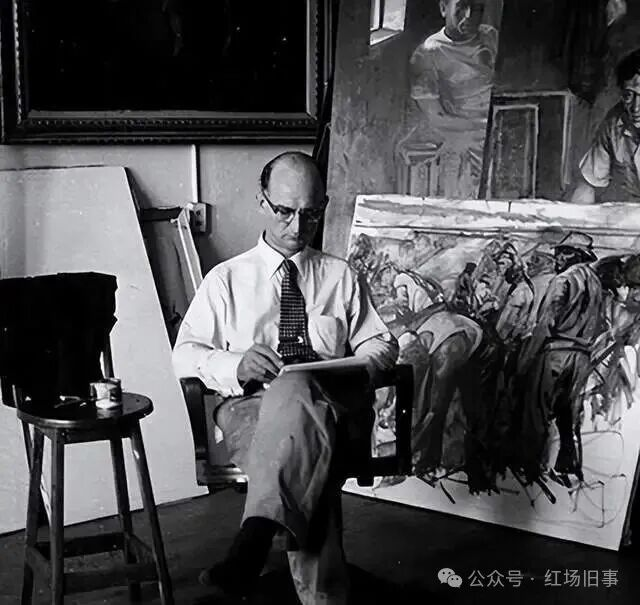
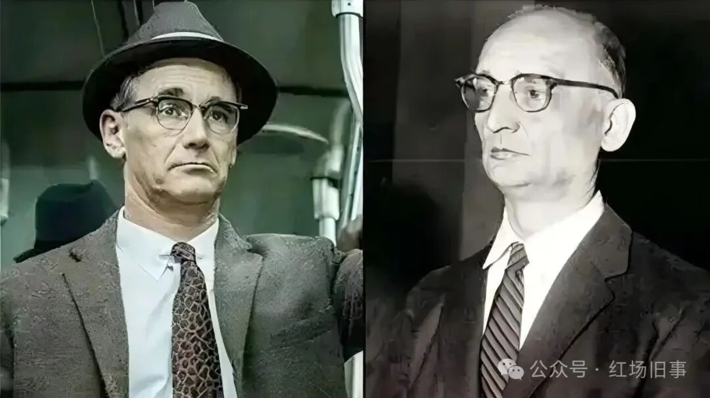
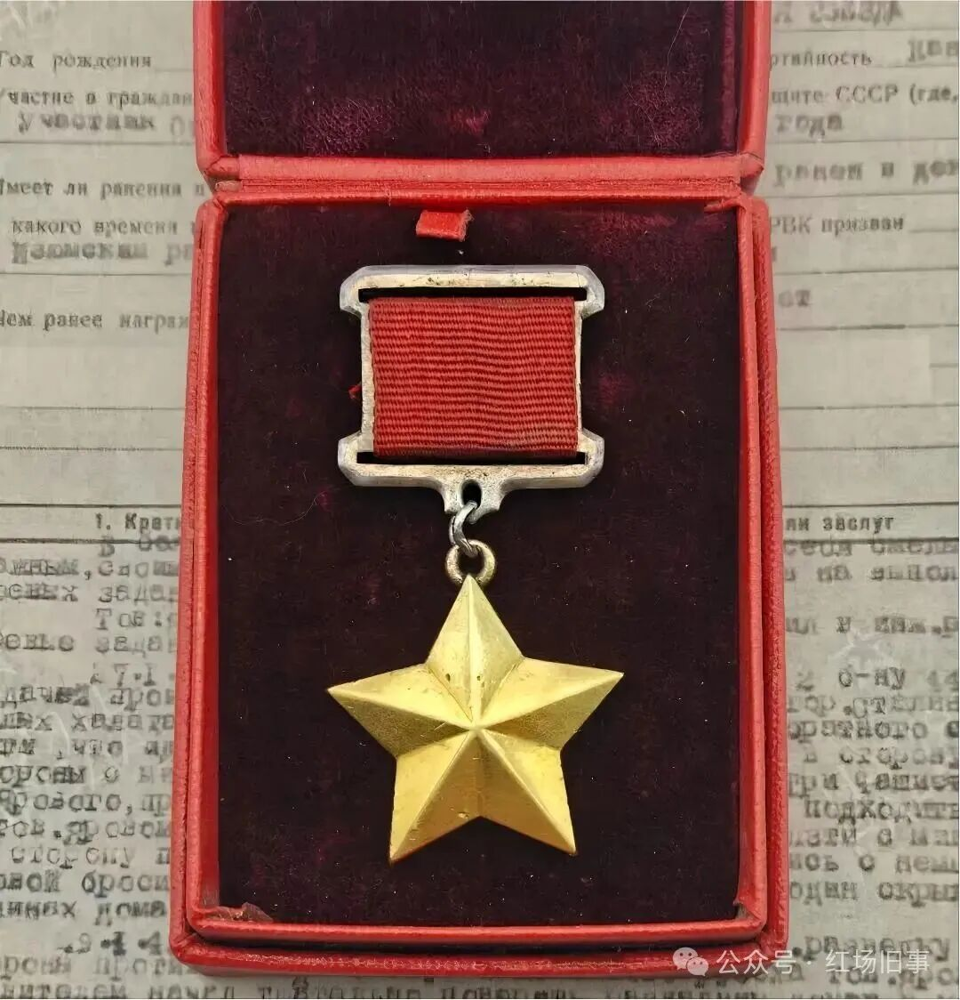
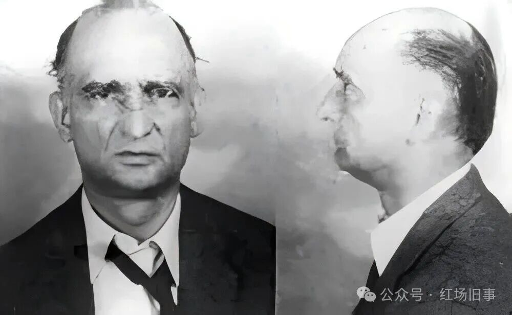
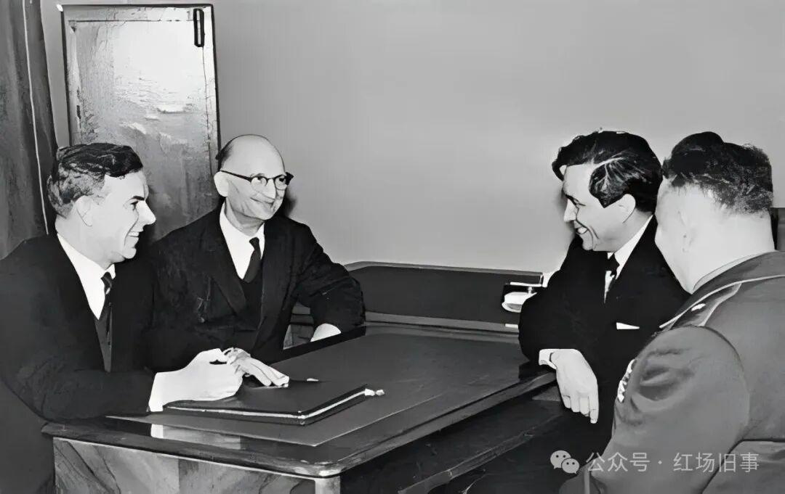
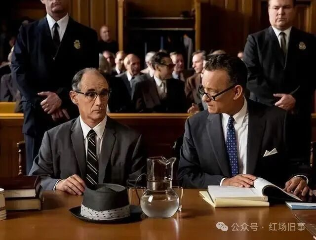

第16期 克格勃最会赚钱的间谍：每年倒贴总部钱，自掏腰包买情报
楔子：1957年纽约画室里的四分钟1957年6月21日，纽约法尔顿街252号。一个中年男人正在画布前调色，门突然被撞开。五六个便衣特工冲进来，枪口对准他：“别动！联邦调查局！”

他抬起头，脸上没有任何惊慌。四分钟后，特工们把画室翻了个底朝天，一无所获。他们不知道的是，就在这四分钟里，这个男人已经完成了一场教科书级的“证据销毁”。密码本——被他捏在手心，借着上厕所的工夫冲进马桶。电报纸——被他揉成一团，蘸着颜料抹在了刚画好的油画上。领带别针里的微缩胶片——被他漫不经心按了一下，胶片无声掉进昏暗的车厢，再也找不到。审讯室里，他语气平静：“我叫埃米尔·戈德富斯，画家。你们抓错人了。”这个男人叫鲁道夫·阿贝尔，苏联克格勃上校，北美间谍网最高负责人。西方情报机构称他为“千面人”——不是因为他长得像谁，而是因为他能变成任何人。
一、从英国纽卡斯尔到莫斯科红场
1903年，阿贝尔出生在英国纽卡斯尔。父亲是俄籍日耳曼裔革命家，曾与列宁一同流亡。10岁那年，他已经能用俄语、德语、英语无缝切换。邻居们都说：这孩子的舌头是弹簧做的。1921年，他随家人回到莫斯科。1925年加入红军，在无线电营受训。他的天赋让人嫉妒：精通6国语言、会弹钢琴吉他、擅长摄影绘画、无线电技术一流。1927年，他被苏联国家政治保卫局选中，成为一名职业间谍。此后的十多年，他辗转英国、法国、挪威、土耳其，身份换了七八个，任务完成得滴水不漏。但真正让他封神的，是二战。
二、柏林心脏里的“纳粹司机”
1939年底，德军入侵波兰。苏联决定派一名间谍打入纳粹内部。选中的人就是阿贝尔——他德语地道，气质儒雅，天生就是当“德国人”的料。他被伪装成德国侨民“约翰·利贝尔”，从伏尔加地区来到拉脱维亚首都里加。在那里，他加入了德国侨民俱乐部。盖世太保通过这个俱乐部秘密组建第五纵队，审查每一个新来者。利贝尔的档案干干净净，言行举止无懈可击，很快通过了审查。

在里加，他结识了工程师亨里希·施瓦茨科普夫。亨里希的叔父是柏林盖世太保的头目。通过这层关系，利贝尔顺利进入德军最高统帅部谍报局，当了一名司机。1941年，他随德军来到苏联战场。一次战斗中，一辆苏军坦克被包围。德军指挥官判断坦克里一定有重要文件，派突击队去抢夺，但全被苏军火力打死。利贝尔主动请缨：“请允许我用生命效忠元首！”他在密集火力中爬了两个小时，钻进坦克。里面果然有一包绝密文件。但他不是拿去交给德国人——他当场烧掉了。烧完文件，他炸毁坦克，然后“身负重伤”，被德军授予勋章。讽刺的是，几乎同一时间，莫斯科授予他“苏联英雄”称号。一个间谍，同时被交战双方授勋，世界间谍史上绝无仅有。

苏联顶级军事荣誉“苏联英雄”称号二战期间，他窃取了无数核心机密：盖世太保头子希姆莱的代表同美国间谍杜勒斯在瑞士的密谈内容、纳粹安插在苏联的1000多名间谍名单、代号“旋风”的破坏计划……每一份情报，都让苏联在战争中抢得先机。
三、纽约法尔顿街的“艺术家”
1946年，二战结束。阿贝尔回到莫斯科，但只休息了一年。1947年，他接到新任务：潜入美国，长期潜伏。他先以难民身份进入加拿大，化名安德烈·卡约蒂斯，身份是画家和艺术摄影师。两年后，1948年11月15日，他从加拿大进入美国。他在百老汇附近的一家廉价旅馆安顿下来，理由很充分：一个刚从欧洲回来的穷画家，当然得住便宜的地方。他吹长笛、弹吉他、跳舞，在小旅馆里人缘极好，没人怀疑这个多才多艺的艺术家。1952年，他搬进法尔顿街252号，改名埃米尔·戈德富斯。5楼的工作室，窗子正对着美国司法部大楼。每天他站在画架前调色时，都能看到那些出入司法部的美国高官。他的任务不是刺探情报，而是组建间谍网。一旦美苏开战，这个网立即启动——搞破坏、制造混乱、干扰战争措施。他是一枚被深埋的“定时炸弹”。他需要一个助手。于是1952年，莫斯科派来了一个人：雷诺·海哈南，克格勃中尉。他没想到，这个助手会毁了他的一生。
四、一枚硬币和一个酒鬼
1952年10月，海哈南抵达纽约。按规矩，他应该在指定地点留下接头信号，等待阿贝尔投递第一封指示信。信号留了，指示信也投了——藏在空心硬币里，塞进约定的死信箱。但海哈南没有收到那枚硬币。那枚藏着微缩胶卷的硬币，不知怎么被当成真钱花掉了。1953年6月，一个叫鲍扎德的14岁报童在卖报时，把这枚硬币抛着玩，掉在地上摔成两半。他看到了里面的胶卷，交给了警察局。FBI拿到胶卷，但破译不了密码，只能存档，这枚硬币成了悬案。更糟的是，直到1954年8月，阿贝尔才第一次见到海哈南。见面那一刻他就心凉了：眼前这个人五短身材、醉醺醺的、说话含糊。莫斯科怎么会派这种人过来？海哈南连莫尔斯电码都没学过，照相技术一塌糊涂。阿贝尔让他开照相馆做掩护，他整天酗酒打老婆，邻居都知道了这个酒鬼。1956年，阿贝尔回国探亲半年。海哈南彻底放飞，照相馆不开张，天天醉生梦死。阿贝尔回来后，决定让他回莫斯科，让总部处置。1957年4月，海哈南登上回国的轮船。但他没回莫斯科——船到巴黎，他溜下船，走进了美国驻法国大使馆。
五、酒鬼的叛变
大使馆官员第一眼看到海哈南，觉得这人不是疯子就是骗子。他矮胖、酗酒、说话颠三倒四，哪像个克格勃特工？海哈南急了，从口袋里掏出一枚空心硬币，取出里面的微缩胶卷，当场破译。大使馆这才相信，把他送回美国。FBI先让医生鉴定，结论是“有自杀倾向的酒鬼”。正要赶他走，海哈南说：“我会破译密码。”他拿过1953年那枚硬币的档案，干脆利落地译出了内容——那是阿贝尔给他的第一封指示信，他从未收到过的信。1957年6月21日，FBI根据海哈南提供的信息，逮捕了埃米尔·戈德富斯——也就是阿贝尔。
六、审判与交换
1957年11月15日，阿贝尔被判30年监禁。

听到判决时，他脸上没有任何表情。律师后来回忆：“这个人的自控能力让我震惊。”他在监狱里待了不到5年。1960年，美国U-2侦察机飞行员鲍尔斯在苏联被击落。苏联提出用鲍尔斯换阿贝尔。1962年2月10日，东德和西德交界的格利尼克大桥。苏联和美国各站一边，两人同时向中间走。阿贝尔和鲍尔斯擦肩而过，一句话都没说。回到莫斯科那天，阿贝尔受到英雄般的欢迎。他被授予列宁勋章，晋升少将，后来专门培训年轻特工。

1964年，阿贝尔与克格勃主席谢米恰斯等人交谈1971年11月15日，阿贝尔因肺癌去世，享年68岁。
尾声：千面人的最后一课
阿贝尔死后多年，他的事迹一直存在CIA兰利总部的培训教材里。作为“间谍教科书”——一个真正的职业间谍，应该像他那样：处变不惊、滴水不漏、永远记得自己在扮演谁。他输给的不是FBI，不是中情局，而是一个酒鬼。但即使被捕的那一刻，他也没有输掉自己的职业素养——四分钟，销毁全部证据。FBI翻遍了画室，什么都没找到。他的故事后来被拍成电影《间谍之桥》。片中有句台词，或许是他一生的注脚：“你怕吗？”“怕有用吗？”

斯皮尔伯格的电影《间谍之桥》
从柏林到纽约，从盖世太保到FBI，这个“千面人”活过了68年，骗过了所有人，最后输给了一枚硬币和一个酒鬼。但他输得起——因为直到咽气那一刻，他仍然是那个自己。一个真正的间谍，不需要别人记住他的名字。他只需要在最后一次接头后，安全消失。阿贝尔做到了。阿贝尔的暴露，是因为助手的无能还是硬币的意外？你认为，他暴露的最主要原因是什么？欢迎在评论区分享你的想法。第3期 红色乐队——纳粹心脏里的苏联情报网第11期 从CIA反苏负责人到克格勃顶级间谍：艾姆斯的双面人生